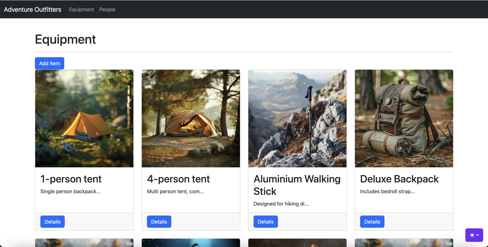
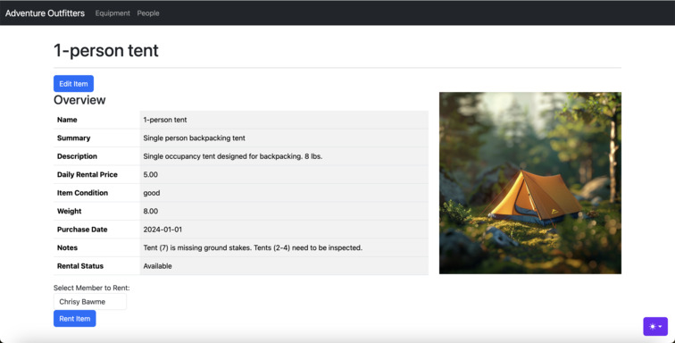
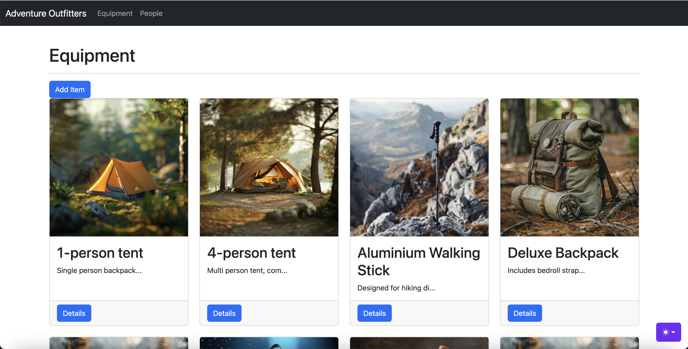
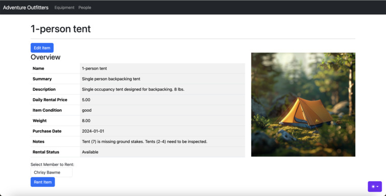
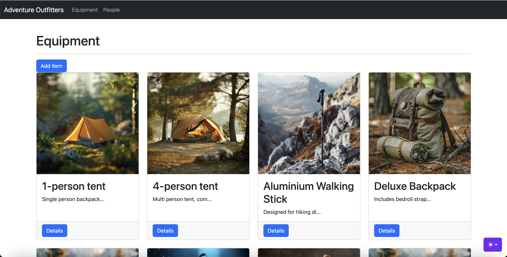
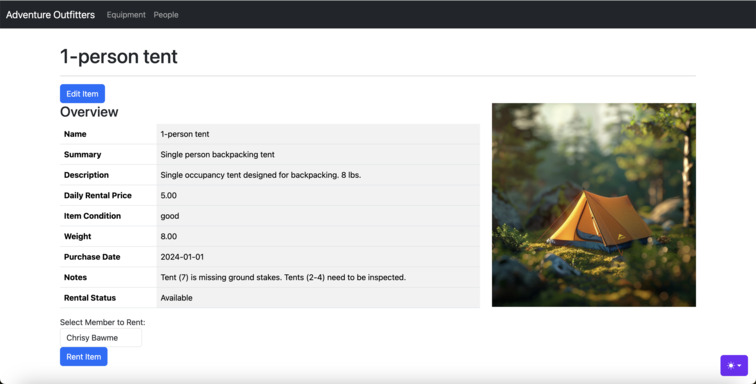

Gallery
 



Encryption and decryption program developed using Python, including AES, RSA, and SHA-256 hashing. The program supports key generation, secure storage and retrieval of RSA keys, and interactive user input for encryption and decryption processes.
private_key.pem and public_key.pem) in PEM format for reuse.

